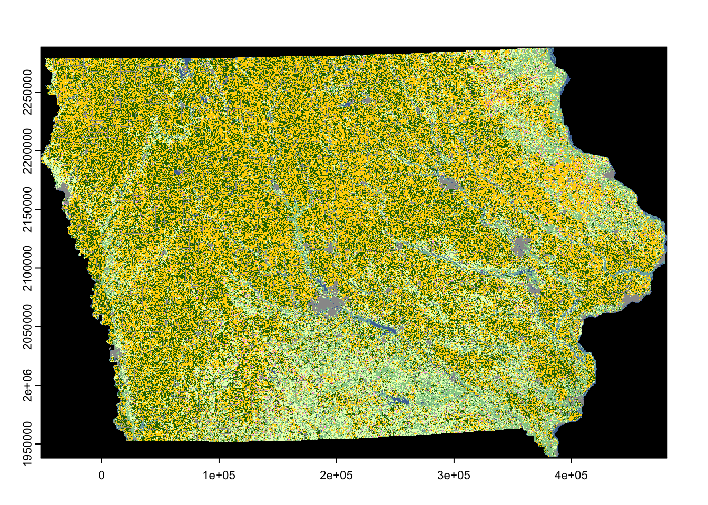

if (!require("pacman")) install.packages("pacman")
pacman::p_load(
terra, # handle raster data
tidyterra, # handle raster data using dplyr verbs
raster, # handle raster data
mapview, # create interactive maps
dplyr, # data wrangling
sf, # vector data handling
lubridate # date handling
)3 Raster Data Basics with terra
Before you start
In this chapter, we will explore how to handle raster data using the raster and terra packages. The raster package has long been the standard for raster data handling, but the terra package has now superseded the raster package. terra typically offers faster performance for many raster operations compared to raster. However, we will still cover raster object classes and how to convert between raster and terra objects. This is because many of the existing spatial packages still rely on raster object classes and have not yet transitioned to terra. Both packages share many function names, and key differences will be clarified as we proceed.
For many scientists, one of the most common and time-consuming raster data task is extracting values for vector data. As such, we will focus on the essential knowledge needed for this process, which will be thoroughly discussed in Chapter 5.
Finally, if you frequently work with raster data that includes temporal dimensions (e.g., PRISM, Daymet), you may find the stars package useful (covered in Chapter 6). It offers a data model tailored for time-based raster data and allows the use of dplyr verbs for data manipulation.
Direction for replication
Datasets
All the datasets that you need to import are available here. In this chapter, the path to files is set relative to my own working directory (which is hidden). To run the codes without having to mess with paths to the files, follow these steps:
- set a folder (any folder) as the working directory using
setwd()
- create a folder called “Data” inside the folder designated as the working directory (if you have created a “Data” folder previously, skip this step)
- download the pertinent datasets from here
- place all the files in the downloaded folder in the “Data” folder
Packages
Run the following code to install or load (if already installed) the pacman package, and then install or load (if already installed) the listed package inside the pacman::p_load() function.
3.1 Raster data object classes
3.1.1 raster package: RasterLayer, RasterStack, and RasterBrick
Let’s start with taking a look at raster data. We will use the CDL data for Iowa in 2015. We can use raster::raster() to read a raster data file.
(
IA_cdl_2015 <- raster::raster("Data/IA_cdl_2015.tif")
)class : RasterLayer
dimensions : 11671, 17795, 207685445 (nrow, ncol, ncell)
resolution : 30, 30 (x, y)
extent : -52095, 481755, 1938165, 2288295 (xmin, xmax, ymin, ymax)
crs : +proj=aea +lat_0=23 +lon_0=-96 +lat_1=29.5 +lat_2=45.5 +x_0=0 +y_0=0 +datum=NAD83 +units=m +no_defs
source : IA_cdl_2015.tif
names : Layer_1
values : 0, 229 (min, max)Evaluating an imported raster object provides key information about the raster data, such as its dimensions (number of cells, rows, and columns), spatial resolution (e.g., 30 meters by 30 meters for this dataset), extent, coordinate reference system (CRS), and the minimum and maximum values recorded. The downloaded data is of the class RasterLayer, which is defined by the raster package. A RasterLayer contains only one layer, meaning that the raster cells hold the value of a single variable (in this case, the land use category code as an integer)
You can stack multiple raster layers of the same spatial resolution and extent to create a RasterStack using raster::stack() or RasterBrick using raster::brick(). Often times, processing a multi-layer object has computational advantages over processing multiple single-layer one by one1.
1 You will see this in Chapter 5 where we learn how to extract values from a raster layer for a vector data.
To create a RasterStack and RasterBrick, let’s load the CDL data for IA in 2016 and stack it with the 2015 data.
IA_cdl_2016 <- raster::raster("Data/IA_cdl_2016.tif")
#--- stack the two ---#
(
IA_cdl_stack <- raster::stack(IA_cdl_2015, IA_cdl_2016)
)class : RasterStack
dimensions : 11671, 17795, 207685445, 2 (nrow, ncol, ncell, nlayers)
resolution : 30, 30 (x, y)
extent : -52095, 481755, 1938165, 2288295 (xmin, xmax, ymin, ymax)
crs : +proj=aea +lat_0=23 +lon_0=-96 +lat_1=29.5 +lat_2=45.5 +x_0=0 +y_0=0 +datum=NAD83 +units=m +no_defs
names : Layer_1, IA_cdl_2016
min values : 0, 0
max values : 229, 241 IA_cdl_stack is of class RasterStack, and it has two layers of variables: CDL for 2015 and 2016. You can make it a RasterBrick using raster::brick():
#--- stack the two ---#
IA_cdl_brick <- brick(IA_cdl_stack)
#--- or this works as well ---#
# IA_cdl_brick <- brick(IA_cdl_2015, IA_cdl_2016)
#--- take a look ---#
IA_cdl_brickclass : RasterBrick
dimensions : 11671, 17795, 207685445, 2 (nrow, ncol, ncell, nlayers)
resolution : 30, 30 (x, y)
extent : -52095, 481755, 1938165, 2288295 (xmin, xmax, ymin, ymax)
crs : Error in if (is.na(x)) { : argument is of length zero
source : r_tmp_2023-03-07_111005_60204_86270.grd
names : IA_cdl_2015, IA_cdl_2016
min values : 0, 0
max values : 229, 241 You probably noticed that it took some time to create the RasterBrick object2. While spatial operations on RasterBrick are supposedly faster than RasterStack, the time to create a RasterBrick object itself is often long enough to kill the speed advantage entirely. Often, the three raster object types are collectively referred to as Raster\(^*\) objects for shorthand in the documentation of the raster and other related packages.
2 Read here for the difference between RasterStack and RasterBrick
3.1.2 terra package: SpatRaster
terra package has only one object class for raster data, SpatRaster and no distinctions between one-layer and multi-layer rasters is necessary. Let’s first convert a RasterLayer to a SpatRaster using terra::rast() function.
#--- convert to a SpatRaster ---#
IA_cdl_2015_sr <- terra::rast(IA_cdl_2015)
#--- take a look ---#
IA_cdl_2015_srclass : SpatRaster
size : 11671, 17795, 1 (nrow, ncol, nlyr)
resolution : 30, 30 (x, y)
extent : -52095, 481755, 1938165, 2288295 (xmin, xmax, ymin, ymax)
coord. ref. : +proj=aea +lat_0=23 +lon_0=-96 +lat_1=29.5 +lat_2=45.5 +x_0=0 +y_0=0 +datum=NAD83 +units=m +no_defs
source : IA_cdl_2015.tif
color table : 1
name : Layer_1
min value : 0
max value : 229 You can see that the number of layers (nlyr in dimensions) is \(1\) because the original object is a RasterLayer, which by definition has only one layer. Now, let’s convert a RasterStack to a SpatRaster using terra::rast().
#--- convert to a SpatRaster ---#
IA_cdl_stack_sr <- terra::rast(IA_cdl_stack)
#--- take a look ---#
IA_cdl_stack_srclass : SpatRaster
size : 11671, 17795, 2 (nrow, ncol, nlyr)
resolution : 30, 30 (x, y)
extent : -52095, 481755, 1938165, 2288295 (xmin, xmax, ymin, ymax)
coord. ref. : +proj=aea +lat_0=23 +lon_0=-96 +lat_1=29.5 +lat_2=45.5 +x_0=0 +y_0=0 +datum=NAD83 +units=m +no_defs
sources : IA_cdl_2015.tif
IA_cdl_2016.tif
color table : 1, 2
names : Layer_1, IA_cdl_2016
min values : 0, 0
max values : 229, 241 Again, it is a SpatRaster, and you now see that the number of layers is 2. We just confirmed that terra has only one class for raster data whether it is single-layer or multiple-layer ones.
In order to make multi-layer SpatRaster from multiple single-layer SpatRaster you can just use c() like below:
#--- create a single-layer SpatRaster ---#
IA_cdl_2016_sr <- terra::rast(IA_cdl_2016)
#--- concatenate ---#
(
IA_cdl_ml_sr <- c(IA_cdl_2015_sr, IA_cdl_2016_sr)
)class : SpatRaster
size : 11671, 17795, 2 (nrow, ncol, nlyr)
resolution : 30, 30 (x, y)
extent : -52095, 481755, 1938165, 2288295 (xmin, xmax, ymin, ymax)
coord. ref. : +proj=aea +lat_0=23 +lon_0=-96 +lat_1=29.5 +lat_2=45.5 +x_0=0 +y_0=0 +datum=NAD83 +units=m +no_defs
sources : IA_cdl_2015.tif
IA_cdl_2016.tif
color table : 1, 2
names : Layer_1, IA_cdl_2016
min values : 0, 0
max values : 229, 241
3.1.3 Converting a SpatRaster object to a Raster\(^*\) object.
You can convert a SpatRaster object to a Raster\(^*\) object using raster::raster(), raster::stack(), and raster::brick(). Keep in mind that if you use raster::rater() even though SpatRaster has multiple layers, the resulting RasterLayer object has only the first of the multiple layers.
#--- RasterLayer (only 1st layer) ---#
IA_cdl_stack_sr %>% raster::raster()class : RasterLayer
dimensions : 11671, 17795, 207685445 (nrow, ncol, ncell)
resolution : 30, 30 (x, y)
extent : -52095, 481755, 1938165, 2288295 (xmin, xmax, ymin, ymax)
crs : +proj=aea +lat_0=23 +lon_0=-96 +lat_1=29.5 +lat_2=45.5 +x_0=0 +y_0=0 +datum=NAD83 +units=m +no_defs
source : IA_cdl_2015.tif
names : Layer_1
values : 0, 229 (min, max)#--- RasterLayer ---#
IA_cdl_stack_sr %>% raster::stack()class : RasterStack
dimensions : 11671, 17795, 207685445, 2 (nrow, ncol, ncell, nlayers)
resolution : 30, 30 (x, y)
extent : -52095, 481755, 1938165, 2288295 (xmin, xmax, ymin, ymax)
crs : +proj=aea +lat_0=23 +lon_0=-96 +lat_1=29.5 +lat_2=45.5 +x_0=0 +y_0=0 +datum=NAD83 +units=m +no_defs
names : Layer_1, IA_cdl_2016
min values : 0, 0
max values : 229, 241 #--- RasterLayer (this takes some time) ---#
IA_cdl_stack_sr %>% raster::brick()class : RasterStack
dimensions : 11671, 17795, 207685445, 2 (nrow, ncol, ncell, nlayers)
resolution : 30, 30 (x, y)
extent : -52095, 481755, 1938165, 2288295 (xmin, xmax, ymin, ymax)
crs : +proj=aea +lat_0=23 +lon_0=-96 +lat_1=29.5 +lat_2=45.5 +x_0=0 +y_0=0 +datum=NAD83 +units=m +no_defs
names : Layer_1, IA_cdl_2016
min values : 0, 0
max values : 229, 241 Instead of these functions, you can simply use as(SpatRast, "Raster") like below:
as(IA_cdl_stack_sr, "Raster")class : RasterStack
dimensions : 11671, 17795, 207685445, 2 (nrow, ncol, ncell, nlayers)
resolution : 30, 30 (x, y)
extent : -52095, 481755, 1938165, 2288295 (xmin, xmax, ymin, ymax)
crs : +proj=aea +lat_0=23 +lon_0=-96 +lat_1=29.5 +lat_2=45.5 +x_0=0 +y_0=0 +datum=NAD83 +units=m +no_defs
names : Layer_1, IA_cdl_2016
min values : 0, 0
max values : 229, 241 This works for any Raster\(^*\) object and you do not have to pick the right function like above.
3.1.4 Vector data in the terra package
terra package has its own class for vector data, called SpatVector. While we do not use any of the vector data functionality provided by the terra package, we learn how to convert an sf object to SpatVector because some of the terra functions do not support sf as of now (this will likely be resolved very soon). We will see some use cases of this conversion in Chapter 5 when we learn raster value extractions for vector data using terra::extract().
As an example, let’s use Illinois county border data.
#--- Illinois county boundary ---#
(
IL_county <-
tigris::counties(
state = "Illinois",
progress_bar = FALSE
) %>%
dplyr::select(STATEFP, COUNTYFP)
)Simple feature collection with 102 features and 2 fields
Geometry type: MULTIPOLYGON
Dimension: XY
Bounding box: xmin: -91.51308 ymin: 36.9703 xmax: -87.01994 ymax: 42.50848
Geodetic CRS: NAD83
First 10 features:
STATEFP COUNTYFP geometry
86 17 067 MULTIPOLYGON (((-90.90609 4...
92 17 025 MULTIPOLYGON (((-88.69516 3...
131 17 185 MULTIPOLYGON (((-87.89243 3...
148 17 113 MULTIPOLYGON (((-88.91954 4...
158 17 005 MULTIPOLYGON (((-89.37207 3...
159 17 009 MULTIPOLYGON (((-90.53674 3...
213 17 083 MULTIPOLYGON (((-90.1459 39...
254 17 147 MULTIPOLYGON (((-88.46335 4...
266 17 151 MULTIPOLYGON (((-88.48289 3...
303 17 011 MULTIPOLYGON (((-89.16654 4...You can convert an sf object to SpatVector object using terra::vect().
(
IL_county_sv <- terra::vect(IL_county)
) class : SpatVector
geometry : polygons
dimensions : 102, 2 (geometries, attributes)
extent : -91.51308, -87.01994, 36.9703, 42.50848 (xmin, xmax, ymin, ymax)
coord. ref. : lon/lat NAD83 (EPSG:4269)
names : STATEFP COUNTYFP
type : <chr> <chr>
values : 17 067
17 025
17 1853.2 Read and write a raster data file
Raster data files can come in numerous different formats. For example, PRPISM comes in the Band Interleaved by Line (BIL) format, some of the Daymet data comes in netCDF format. Other popular formats include GeoTiff, SAGA, ENVI, and many others.
3.2.1 Read raster file(s)
You can use terra::rast() to read raster data in many common formats, and in most cases, this function will work for your raster data. In this example, we read a GeoTIFF file (with a .tif extension).
(
IA_cdl_2015_sr <- terra::rast("Data/IA_cdl_2015.tif")
)class : SpatRaster
size : 11671, 17795, 1 (nrow, ncol, nlyr)
resolution : 30, 30 (x, y)
extent : -52095, 481755, 1938165, 2288295 (xmin, xmax, ymin, ymax)
coord. ref. : +proj=aea +lat_0=23 +lon_0=-96 +lat_1=29.5 +lat_2=45.5 +x_0=0 +y_0=0 +datum=NAD83 +units=m +no_defs
source : IA_cdl_2015.tif
color table : 1
name : Layer_1
min value : 0
max value : 229 You can read multiple single-layer raster datasets of the same spatial extent and resolution at the same time to have a multi-layer SpatRaster object. Here, we import two single-layer raster datasets (IA_cdl_2015.tif and IA_cdl_2016.tif) to create a two-layer SpatRaster object.
#--- the list of path to the files ---#
files_list <- c("Data/IA_cdl_2015.tif", "Data/IA_cdl_2016.tif")
#--- read the two at the same time ---#
(
multi_layer_sr <- terra::rast(files_list)
)class : SpatRaster
size : 11671, 17795, 2 (nrow, ncol, nlyr)
resolution : 30, 30 (x, y)
extent : -52095, 481755, 1938165, 2288295 (xmin, xmax, ymin, ymax)
coord. ref. : +proj=aea +lat_0=23 +lon_0=-96 +lat_1=29.5 +lat_2=45.5 +x_0=0 +y_0=0 +datum=NAD83 +units=m +no_defs
sources : IA_cdl_2015.tif
IA_cdl_2016.tif
color table : 1, 2
names : Layer_1, IA_cdl_2016
min values : 0, 0
max values : 229, 241 Of course, this only works because the two datasets have the identical spatial extent and resolution. There are, however, no restrictions on what variable each of the raster layers represent. For example, you can combine PRISM temperature and precipitation raster layers if you want.
3.2.2 Write raster files
You can write a SpatRaster object using terra::writeRaster().
terra::writeRaster(IA_cdl_2015_sr, "Data/IA_cdl_stack.tif", filetype = "GTiff", overwrite = TRUE)The above code saves IA_cdl_2015_sr (a SpatRaster object) as a GeoTiff file.3 The filetype option can be dropped as writeRaster() infers the filetype from the extension of the file name. The overwrite = TRUE option is necessary if a file with the same name already exists and you are overwriting it. This is one of the many areas terra is better than raster. raster::writeRaster() can be frustratingly slow for a large Raster\(^*\) object. terra::writeRaster() is much faster.
3 There are many other alternative formats (see here)
You can also save a multi-layer SpatRaster object just like you save a single-layer SpatRaster object.
terra::writeRaster(IA_cdl_stack_sr, "Data/IA_cdl_stack.tif", filetype = "GTiff", overwrite = TRUE)The saved file is a multi-band raster datasets. So, if you have many raster files of the same spatial extent and resolution, you can “stack” them on R and then export it to a single multi-band raster datasets, which cleans up your data folder.
3.3 Basic operations
3.3.1 Accessing the metadata
3.3.1.1 Extent and dimensions
The spatial extent of a SpatRaster object is like a bouding box for an sf object. It can be used to crop a SpatRaster or sf object.
terra::ext(IA_cdl_ml_sr)SpatExtent : -52095, 481755, 1938165, 2288295 (xmin, xmax, ymin, ymax)You can access the dimensions of a SpatRaster object as follows:
3.3.1.2 Get CRS
You often need to extract the CRS of a raster object before you interact it with vector data (e.g., extracting values from a raster layer to vector data, or cropping a raster layer to the spatial extent of vector data), which can be done using terra::crs():
terra::crs(IA_cdl_ml_sr)[1] "PROJCRS[\"unknown\",\n BASEGEOGCRS[\"NAD83\",\n DATUM[\"North American Datum 1983\",\n ELLIPSOID[\"GRS 1980\",6378137,298.257222101004,\n LENGTHUNIT[\"metre\",1]]],\n PRIMEM[\"Greenwich\",0,\n ANGLEUNIT[\"degree\",0.0174532925199433]],\n ID[\"EPSG\",4269]],\n CONVERSION[\"Albers Equal Area\",\n METHOD[\"Albers Equal Area\",\n ID[\"EPSG\",9822]],\n PARAMETER[\"Latitude of false origin\",23,\n ANGLEUNIT[\"degree\",0.0174532925199433],\n ID[\"EPSG\",8821]],\n PARAMETER[\"Longitude of false origin\",-96,\n ANGLEUNIT[\"degree\",0.0174532925199433],\n ID[\"EPSG\",8822]],\n PARAMETER[\"Latitude of 1st standard parallel\",29.5,\n ANGLEUNIT[\"degree\",0.0174532925199433],\n ID[\"EPSG\",8823]],\n PARAMETER[\"Latitude of 2nd standard parallel\",45.5,\n ANGLEUNIT[\"degree\",0.0174532925199433],\n ID[\"EPSG\",8824]],\n PARAMETER[\"Easting at false origin\",0,\n LENGTHUNIT[\"metre\",1],\n ID[\"EPSG\",8826]],\n PARAMETER[\"Northing at false origin\",0,\n LENGTHUNIT[\"metre\",1],\n ID[\"EPSG\",8827]]],\n CS[Cartesian,2],\n AXIS[\"easting\",east,\n ORDER[1],\n LENGTHUNIT[\"metre\",1,\n ID[\"EPSG\",9001]]],\n AXIS[\"northing\",north,\n ORDER[2],\n LENGTHUNIT[\"metre\",1,\n ID[\"EPSG\",9001]]]]"3.3.2 Get cell values
You can access the values stored in a SpatRaster object using the terra::values() function or []:
Layer_1 IA_cdl_2016
[1,] 0 0
[2,] 0 0
[3,] 0 0
[4,] 0 0
[5,] 0 0
[6,] 0 0[]
#--- terra::values ---#
values_from_ml_sr <- IA_cdl_ml_sr[]
#--- take a look ---#
head(values_from_ml_sr) Layer_1 IA_cdl_2016
[1,] 0 0
[2,] 0 0
[3,] 0 0
[4,] 0 0
[5,] 0 0
[6,] 0 0The returned values come in a matrix form of two columns because we are getting values from a two-layer SpatRaster object (one column for each layer). In general, terra::values() returns a \(X\) by \(n\) matrix, where \(X\) is the number of cells and \(n\) is the number of layers.
3.3.3 Subset (access particular layers)
You can access specific layers in a multi-layer raster object by using the subset() function with either the name of the layers or their numerical indices specified.
subset(IA_cdl_ml_sr, "IA_cdl_2016")class : SpatRaster
size : 11671, 17795, 1 (nrow, ncol, nlyr)
resolution : 30, 30 (x, y)
extent : -52095, 481755, 1938165, 2288295 (xmin, xmax, ymin, ymax)
coord. ref. : +proj=aea +lat_0=23 +lon_0=-96 +lat_1=29.5 +lat_2=45.5 +x_0=0 +y_0=0 +datum=NAD83 +units=m +no_defs
source : IA_cdl_2016.tif
color table : 1
name : IA_cdl_2016
min value : 0
max value : 241 #--- second layer ---#
subset(IA_cdl_ml_sr, 2)class : SpatRaster
size : 11671, 17795, 1 (nrow, ncol, nlyr)
resolution : 30, 30 (x, y)
extent : -52095, 481755, 1938165, 2288295 (xmin, xmax, ymin, ymax)
coord. ref. : +proj=aea +lat_0=23 +lon_0=-96 +lat_1=29.5 +lat_2=45.5 +x_0=0 +y_0=0 +datum=NAD83 +units=m +no_defs
source : IA_cdl_2016.tif
color table : 1
name : IA_cdl_2016
min value : 0
max value : 241 If you are accessing a single layer, you can use a familiar-looking syntax using $ like below:
IA_cdl_ml_sr$IA_cdl_2016class : SpatRaster
size : 11671, 17795, 1 (nrow, ncol, nlyr)
resolution : 30, 30 (x, y)
extent : -52095, 481755, 1938165, 2288295 (xmin, xmax, ymin, ymax)
coord. ref. : +proj=aea +lat_0=23 +lon_0=-96 +lat_1=29.5 +lat_2=45.5 +x_0=0 +y_0=0 +datum=NAD83 +units=m +no_defs
source : IA_cdl_2016.tif
color table : 1
name : IA_cdl_2016
min value : 0
max value : 241 3.3.4 Add a new layer
You can create a new layer to a SpatRaster object in a very similar syntax as creating a new variable to a data.frame like below:
#--- create a new layer called new_layer ---#
(
IA_cdl_ml_sr$new_layer <- IA_cdl_ml_sr$IA_cdl_2016
)class : SpatRaster
size : 11671, 17795, 1 (nrow, ncol, nlyr)
resolution : 30, 30 (x, y)
extent : -52095, 481755, 1938165, 2288295 (xmin, xmax, ymin, ymax)
coord. ref. : +proj=aea +lat_0=23 +lon_0=-96 +lat_1=29.5 +lat_2=45.5 +x_0=0 +y_0=0 +datum=NAD83 +units=m +no_defs
source : IA_cdl_2016.tif
color table : 1
name : IA_cdl_2016
min value : 0
max value : 241 Here, we created a new layer called new_layer to IA_cdl_ml_sr, where the values stored in the new layer are simply the valuesn stored in the IA_cdl_2016 layer.
3.4 Arithmetic operations
You can do basic arithmetic operations (addition, subtraction, division, etc) using raster layers as long as they share the same spatial extent and resolution.
Raster arithmetic operations are done element-by-element (cell-by-cell) just like vector arithmetic operations. That is, when two layers are added, then the two values associated with the same cell are added and the resulting value becomes the new value for the cell in the newly created RasterLayer.
As a demonstration, let’s try to calculate NDVI from NIR and RED. The mathematical definition of NDVI is as follows:
\[\begin{align} NDVI = (NIR-RED)/(NIR+RED) \end{align}\]Let’s first import NIR and RED.
Let’s use the formula to calculate NDVI:
NIR_and_RED$NDVI <- (NIR_and_RED$NIR - NIR_and_RED$RED)/(NIR_and_RED$NIR + NIR_and_RED$RED)Now, we have a layer named NDVI in NIR_and_RED.
You can also apply mathematical functions to the layers like below4:
4 The calculated numers are not meaningful. This is just a demonstration of using mathematical functions.
log(NIR_and_RED$NIR) + NIR_and_RED$RED^2class : SpatRaster
size : 482, 239, 1 (nrow, ncol, nlyr)
resolution : 1.7588, 1.7588 (x, y)
extent : 286164.7, 286585.1, 4433250, 4434097 (xmin, xmax, ymin, ymax)
coord. ref. : WGS 84 / UTM zone 15N (EPSG:32615)
source(s) : memory
varname : NIR
name : NIR
min value : -2.011367
max value : -0.394775
3.5 Turning a raster object into a data.frame (not necessary)
You can use the as.data.frame() function with xy = TRUE option to construct a data.frame where each row represents a single cell that has cell values for each layer and its coordinates (the center of the cell).
#--- converting to a data.frame ---#
IA_cdl_df <- as.data.frame(IA_cdl_stack_sr, xy = TRUE) # this works with Raster* objects as well
#--- take a look ---#
head(IA_cdl_df) x y Layer_1 Layer_1.1
1 -52080 2288280 0 0
2 -52050 2288280 0 0
3 -52020 2288280 0 0
4 -51990 2288280 0 0
5 -51960 2288280 0 0
6 -51930 2288280 0 05 If you know of cases where converting to a data.frame is beneficial or necessary, please let me know, and I will include them here.
3.6 Quick visualization
To have a quick visualization of the data values of SpatRaster objects, you can simply use plot():
plot(IA_cdl_2015_sr)
For a more elaborate map using raster data, see Section 7.2.
3.7 Working with netCDFs
A netCDF file contains data with a specific structure: a two-dimensional spatial grid (e.g., longitude and latitude) and a third dimension which is usually date or time. This structure is convenient for weather data measured on a consistent grid over time. One such dataset is called gridMET which maintains a gridded dataset of weather variables at 4km resolution. Let’s download the daily precipitation data for 2018 using downloader::download()6. We set the destination file name (what to call the file and where we want it to be), and the mode to wb for a binary download.
6 gridMET data is also available in the Google Earth Engine Data Catalog, which can be accessed with the R library rgee
#--- download gridMET precipitation 2018 ---#
downloader::download(
url = str_c("http://www.northwestknowledge.net/metdata/data/pr_2018.nc"),
destfile = "Data/pr_2018.nc",
mode = "wb"
)This code should have stored the data as pr_2018.nc in the Data folder. You can read a netCDF file using terra::rast().
(
pr_2018_gm <- terra::rast("Data/pr_2018.nc")
)class : SpatRaster
size : 585, 1386, 365 (nrow, ncol, nlyr)
resolution : 0.04166667, 0.04166667 (x, y)
extent : -124.7875, -67.0375, 25.04583, 49.42083 (xmin, xmax, ymin, ymax)
coord. ref. : lon/lat WGS 84 (EPSG:4326)
source : pr_2018.nc
varname : precipitation_amount (pr)
names : preci~43099, preci~43100, preci~43101, preci~43102, preci~43103, preci~43104, ...
unit : mm
depth : 43099 to 43463 (day [days since 1900-01-01 00:00:00]: 365 steps) You can see that it has 365 layers: one layer per day in 2018. Let’s now look at layer names:
[1] "precipitation_amount_day=43099" "precipitation_amount_day=43100"
[3] "precipitation_amount_day=43101" "precipitation_amount_day=43102"
[5] "precipitation_amount_day=43103" "precipitation_amount_day=43104"Since we have 365 layers and the number at the end of the layer names increase by 1, you would think that nth layer represents nth day of 2018. In this case, you are correct. However, it is always a good practice to confirm what each layer represents without assuming anything. Now, let’s use the ncdf4 package, which is built specifically to handle netCDF4 objects.
(
pr_2018_nc <- ncdf4::nc_open("Data/pr_2018.nc")
)File Data/pr_2018.nc (NC_FORMAT_NETCDF4):
1 variables (excluding dimension variables):
unsigned short precipitation_amount[lon,lat,day] (Chunking: [231,98,61]) (Compression: level 9)
_FillValue: 32767
units: mm
description: Daily Accumulated Precipitation
long_name: pr
standard_name: pr
missing_value: 32767
dimensions: lon lat time
grid_mapping: crs
coordinate_system: WGS84,EPSG:4326
scale_factor: 0.1
add_offset: 0
coordinates: lon lat
_Unsigned: true
4 dimensions:
lon Size:1386
units: degrees_east
description: longitude
long_name: longitude
standard_name: longitude
axis: X
lat Size:585
units: degrees_north
description: latitude
long_name: latitude
standard_name: latitude
axis: Y
day Size:365
description: days since 1900-01-01
units: days since 1900-01-01 00:00:00
long_name: time
standard_name: time
calendar: gregorian
crs Size:1
grid_mapping_name: latitude_longitude
longitude_of_prime_meridian: 0
semi_major_axis: 6378137
long_name: WGS 84
inverse_flattening: 298.257223563
GeoTransform: -124.7666666333333 0.041666666666666 0 49.400000000000000 -0.041666666666666
spatial_ref: GEOGCS["WGS 84",DATUM["WGS_1984",SPHEROID["WGS 84",6378137,298.257223563,AUTHORITY["EPSG","7030"]],AUTHORITY["EPSG","6326"]],PRIMEM["Greenwich",0,AUTHORITY["EPSG","8901"]],UNIT["degree",0.0174532925199433,AUTHORITY["EPSG","9122"]],AUTHORITY["EPSG","4326"]]
19 global attributes:
geospatial_bounds_crs: EPSG:4326
Conventions: CF-1.6
geospatial_bounds: POLYGON((-124.7666666333333 49.400000000000000, -124.7666666333333 25.066666666666666, -67.058333300000015 25.066666666666666, -67.058333300000015 49.400000000000000, -124.7666666333333 49.400000000000000))
geospatial_lat_min: 25.066666666666666
geospatial_lat_max: 49.40000000000000
geospatial_lon_min: -124.7666666333333
geospatial_lon_max: -67.058333300000015
geospatial_lon_resolution: 0.041666666666666
geospatial_lat_resolution: 0.041666666666666
geospatial_lat_units: decimal_degrees north
geospatial_lon_units: decimal_degrees east
coordinate_system: EPSG:4326
author: John Abatzoglou - University of Idaho, jabatzoglou@uidaho.edu
date: 03 May 2021
note1: The projection information for this file is: GCS WGS 1984.
note2: Citation: Abatzoglou, J.T., 2013, Development of gridded surface meteorological data for ecological applications and modeling, International Journal of Climatology, DOI: 10.1002/joc.3413
note3: Data in slices after last_permanent_slice (1-based) are considered provisional and subject to change with subsequent updates
note4: Data in slices after last_provisional_slice (1-based) are considered early and subject to change with subsequent updates
note5: Days correspond approximately to calendar days ending at midnight, Mountain Standard Time (7 UTC the next calendar day)As you can see from the output, there is tons of information that we did not see when we read the data using rast(), which includes the explanation of the third dimension (day) of this raster object. It turned out that the numerical values at the end of layer names in the SpatRaster object are days since 1900-01-01. So, the first layer (named precipitation_amount_day=43099) represents:
lubridate::ymd("1900-01-01") + 43099[1] "2018-01-01"Actually, if we use raster::brick(), instead of terra::rast(), then we can see the naming convention of the layers:
(
pr_2018_b <- raster::brick("Data/pr_2018.nc")
)class : RasterBrick
dimensions : 585, 1386, 810810, 365 (nrow, ncol, ncell, nlayers)
resolution : 0.04166667, 0.04166667 (x, y)
extent : -124.7875, -67.0375, 25.04583, 49.42083 (xmin, xmax, ymin, ymax)
crs : +proj=longlat +datum=WGS84 +no_defs
source : pr_2018.nc
names : X43099, X43100, X43101, X43102, X43103, X43104, X43105, X43106, X43107, X43108, X43109, X43110, X43111, X43112, X43113, ...
day (days since 1900-01-01 00:00:00): 43099, 43463 (min, max)
varname : precipitation_amount SpatRaster or RasterBrick objects are easier to work with as many useful functions accept them as inputs, but not the ncdf4 object. Personally, I first scrutinize a netCDFs file using nc_open() and then import it as a SpatRaster or RasterBrick object7. Recovering the dates for the layers is particularly important as we often wrangle the resulting data based on date (e.g., subset the data so that you have only April to September). An example of date recovery can be seen in Section 8.5.
7 Even though RasterBrick provides the description of how layers are named, I think it is a good practice to see the full description in the ncdf4 object.
For those who are interested in more detailed descriptions of how to work with ncdf4 object is provided here.